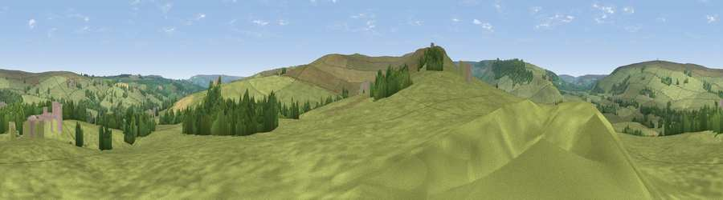

Viewpoint near Lealholm
#30569 in England · top 66% of its area beats it · near Lealholm · access?Where it is
The exact computed spot (NZ 75375 06625). Click the marker for map links.
Public access: no public right of way or access land is recorded at this exact spot — it may be on private land. Computed from Natural England's CRoW access layer and OpenStreetMap rights of way — not the legal definitive map. Always verify locally.
The view, rendered

A 360° render of this exact spot computed from the terrain model, tree cover and land cover — summer colours, afternoon light, calibrated against photographs of famous viewpoints. Real trees, hedges and buildings will differ in detail.
The panorama
Grey silhouette: terrain skyline in each direction (720 bearings, Earth curvature and refraction included). Dashed green: skyline with trees (+15 m) and buildings (+8 m) as obstacles. Blue strip: how far the ground is visible on each bearing.
Where the view opens
Wedge length = distance to the farthest visible ground on that bearing (vegetation-aware). Rings at 10, 25 and 50 km.
What fills the view
88% grassland · 10% woodland · 1% cropland
Angular shares of the visible panorama (visual magnitude), not map area. Landscape diversity 0.19 (0–1 Shannon).
Key numbers
More beautiful places nearby
The staircase of upgrades: each row has a higher view potential than everything closer. Driving times are estimates from straight-line distance, calibrated against real road routing — check an actual route before setting out.
| Place | Direction | Drive | Score |
|---|---|---|---|
| Viewpoint near Lealholm | NE · 2 km | ~6 min | 44.5 |
| Danby Beacon | NNW · 3 km | ~8 min | 73.4 |
| Viewpoint near Roxby | NNE · 8 km | ~16 min | 78.2 |
| Viewpoint near Eskdaleside | E · 10 km | ~19 min | 80.7 |
| Viewpoint near Lythe | NE · 12 km | ~22 min | 81.3 |
| Beacon Hill | NNE · 12 km | ~22 min | 82.3 |
| Viewpoint near Easington | N · 13 km | ~24 min | 86.9 |
| Viewpoint near Easington | N · 13 km | ~24 min | 90.2 |
54.44944, -0.83907 · source: screening · position refined by local search. Computed location — check access rights before visiting.